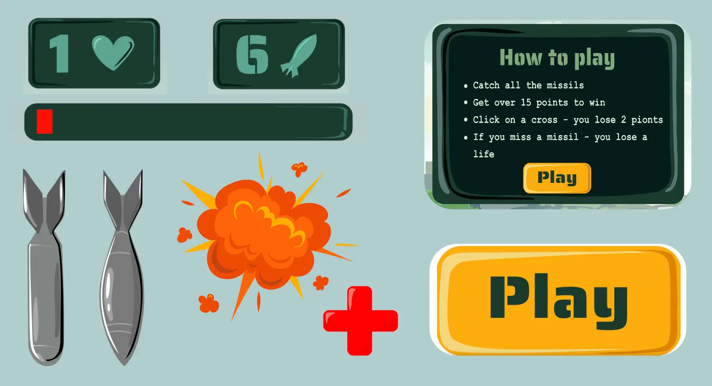

04.04.01 TEMAOPGAVE
I Tema 4 har vi lært at lave interaktivt animeret spil, som vi har selv designet og programmeret. For at gå i gang med ideudvikling, har vi lavet flere øvelser såsom kryds liste øvelse og 10 ideer. Ideen for mit spil fik jeg med det samme. Det skulle handle om krig i Ukraine. Hele spillets ide startede med det, der bekymrer mig allermest hver dag. Det er nyheder fra mit hjemland. Min bror er stadig i Kiev, derfor tjekker jeg hver dag om der er endnu et angreb på byen eller ej. Så i spillet skal man beskytte byen og fange missiler, som falder oppefra. Hvis den falder og ramme bunden, mister man et liv. Der er også et rødt kors, som er en hjælpepakke og man skal undgå at trykke på det, for byen ikke få hjælpen. Man mister 2 points ved at trykke på det. For at teste spillet, lavede jeg en papirprototype, så man kunne se hvordan spillet fungerer. Bagefter har jeg lavet et aktivitetsdiagram, som hjælper med at strukturer handlingerne i spillet, hvor man kan se hvilken handling føre næst.

Designudvikling
Den næste fase var designudvikling. Man skulle vælge en stil. Der var flere eksempler og ideer, fx kawai – japansk stil, hvor karaktererne er lavet i rundede former, har stor runde øjne og er generelt cute; flat design – som er tegnet i meget simple former; gyser-genre – mørke farver, skarpe former osv. Jeg valgte flat design stil, men jeg har valgt at lave den lidt mere detaljeret. Jeg har lavet er række skitser for at finde stilen jeg vil arbejde med, og dermed har jeg lavet skitser af mine karakter. Derudover begyndte jeg at arbejde på alle design elementer i Adobe Illustrator, samt baggrund, figur og UI-elementer. Jeg valgte at lave spillet i dampede grønne og grå farver, med accent på orange UI-elementer. de farver efter min mening vil afspejle spillets military emne.

CSS-animation og JavaScript
Efter vi blev færdig med design delen, gik vi i gang med at lave css-animationer. Vi har lært, at man skal først lave en class med animation, som tildeles til dem element som skal animeres, og bagefter lave @keyframes, hvor man kan ændre elementet (tilføje en bevægelse, skalere elemetet). Vi har lavet en række øvelser, som hjalp med at forstå konceptet, og bagefter kunne vi implementere den viden i vores spil.
Så blev vi introduceret til JavaScript, som er ansvarlig for sidens funktionalitet. JavaScript
fortæller siden, hvad den skal gøre. Der kan vi styre hvordan forskellige elementer vil visses på
siden. I vores spil kunne vi fx ved hjælp af JS styre start og slut skærme, elementerne som falder
eller popper up, animationen på de elementer osv. I mit spil havde jeg 3 elementer, 2 raketter og 1
kors, og jeg har også tilføjet en eksplosion animation med eksplosion illustration på. Vi har også
lavet fejlfinding øvelser, for at blive hurtigere til at finde fejl i coden. Det hjalp rigtig meget
i de næsefløjene opgaver.
Vi har også lært at lave Satate Machine Diagrammer, hvor man skulle beskrive spilproces med
funktions navne og animationer. Det gjorde vi for at strukturere JS og have et overblik over alle
funktionerne.